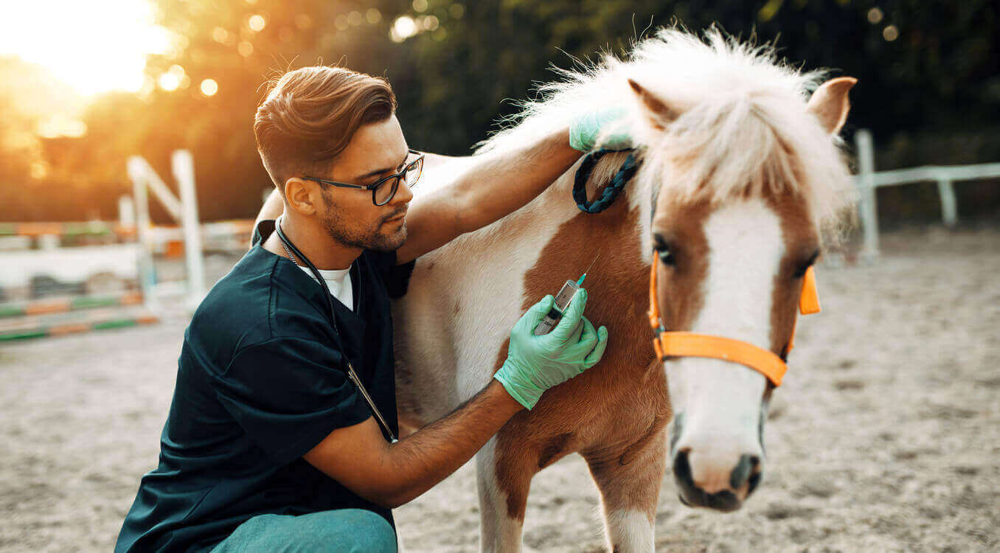

Cursos Oferecidos
Medicina

O curso de Medicina forma profissionais capacitados para atuar na prevenção, diagnóstico e tratamento de doenças, com foco na saúde integral do paciente.
Custo: R$ 2.500,00/mês
Informações Adicionais: O curso de Medicina forma profissionais capacitados para atuar na prevenção, diagnóstico e tratamento de doenças, com foco na saúde integral do paciente. Os alunos aprendem sobre anatomia, fisiologia, farmacologia e diversas especialidades médicas, além de desenvolver habilidades práticas em laboratórios e estágios em hospitais. O curso enfatiza a importância da ética e da humanização no atendimento ao paciente, preparando os futuros médicos para enfrentar os desafios da profissão. Os graduados podem atuar em clínicas, hospitais, consultórios e também têm a opção de seguir especializações em áreas como cirurgia, pediatria, psiquiatria, entre outras.
Direito
O curso de Direito proporciona uma formação sólida nas áreas do Direito Civil, Penal, Trabalhista e Constitucional, preparando o aluno para atuar em diversas áreas do mercado jurídico.
Custo: R$ 1.800,00/mês
Informações Adicionais: O curso de Direito proporciona uma formação sólida nas áreas do Direito Civil, Penal, Trabalhista e Constitucional, preparando o aluno para atuar em diversas áreas do mercado jurídico. Os estudantes aprendem a interpretar e aplicar a legislação, desenvolver habilidades de argumentação e análise crítica, além de participar de simulações de julgamentos e práticas em clínicas jurídicas. O curso também aborda temas contemporâneos, como direitos humanos, ética profissional e mediação de conflitos. Os graduados podem seguir carreiras como advogados, juízes, promotores, defensores públicos, consultores jurídicos e muito mais.
Ciência da Computação
O curso de Ciência da Computação desenvolve habilidades em programação, algoritmos e desenvolvimento de software, preparando o aluno para o mercado de tecnologia.
Custo: R$ 1.600,00/mês
Informações Adicionais: O curso de Ciência da Computação desenvolve habilidades em programação, algoritmos e desenvolvimento de software, preparando o aluno para o mercado de tecnologia. Os estudantes aprendem diversas linguagens de programação, estruturas de dados, inteligência artificial, segurança da informação e desenvolvimento de aplicativos. O curso inclui projetos práticos e parcerias com empresas de tecnologia, proporcionando experiências reais e estágios. Os graduados podem atuar como desenvolvedores de software, analistas de sistemas, engenheiros de dados, especialistas em segurança cibernética, entre outras funções.
Medicina Veterinária
O curso de Medicina Veterinária capacita profissionais para cuidar da saúde animal, atuando na prevenção e tratamento de doenças em animais de companhia e de produção.
Custo: R$ 2.200,00/mês
Informações Adicionais: O curso de Medicina Veterinária capacita profissionais para cuidar da saúde animal, atuando na prevenção e tratamento de doenças em animais de companhia e de produção. Os alunos estudam anatomia, fisiologia, farmacologia e patologia veterinária, além de desenvolver habilidades práticas em clínicas e hospitais veterinários. O curso também aborda temas como bem-estar animal, nutrição e saúde pública veterinária. Os graduados podem trabalhar em clínicas, hospitais, fazendas, indústrias de alimentos e até em pesquisa científica.
Agronomia

O curso de Agronomia forma profissionais aptos a atuar na produção agrícola, manejo de recursos naturais e desenvolvimento sustentável do agronegócio.
Custo: R$ 1.700,00/mês
Informações Adicionais:O curso de Agronomia forma profissionais aptos a atuar na produção agrícola, manejo de recursos naturais e desenvolvimento sustentável do agronegócio. Os alunos aprendem sobre solo, plantas, clima, técnicas de cultivo e manejo de pragas, além de desenvolver habilidades em gestão e inovação no setor agrícola. O curso inclui experiências práticas em fazendas e laboratórios de análise de solo, preparando os graduados para enfrentar os desafios do agronegócio moderno. Os profissionais podem atuar como agrônomos, consultores, pesquisadores e gestores de propriedades rurais.
Biomedicina

O curso de Biomedicina prepara profissionais para atuar em análises clínicas, pesquisa e desenvolvimento de novas tecnologias na área da saúde.
Custo: R$ 1.900,00/mês
Informações Adicionais: O curso de Biomedicina prepara profissionais para atuar em análises clínicas, pesquisa e desenvolvimento de novas tecnologias na área da saúde. Os alunos estudam biologia celular, microbiologia, bioquímica e genética, além de desenvolver habilidades práticas em laboratórios de análises. O curso enfatiza a importância da pesquisa científica e da inovação na área da saúde, preparando os graduados para contribuir com diagnósticos e tratamentos. Os profissionais podem trabalhar em laboratórios, hospitais, indústrias farmacêuticas e centros de pesquisa.
Fisioterapia
O curso de Fisioterapia forma profissionais para reabilitar e promover a saúde física, utilizando técnicas e métodos de tratamento variados.
Custo: R$ 1.800,00/mês
Informações Adicionais: O curso de Fisioterapia forma profissionais para reabilitar e promover a saúde física, utilizando técnicas e métodos de tratamento variados. Os alunos aprendem sobre anatomia, fisiologia, cinesiologia e técnicas de terapia manual, além de desenvolver habilidades práticas em clínicas de fisioterapia. O curso aborda a importância da prevenção de doenças e promoção da saúde, preparando os graduados para atuar em diversas áreas, como ortopedia, neurologia, pediatria e geriatria. Os profissionais podem trabalhar em hospitais, clínicas, academias e consultórios.
Nutrição
O curso de Nutrição capacita profissionais a atuar na promoção da saúde e prevenção de doenças através da alimentação adequada e saudável.
Custo: R$ 1.700,00/mês
Informações Adicionais: O curso de Nutrição capacita profissionais a promover a saúde e o bem-estar por meio da alimentação adequada e saudável. Os alunos estudam bioquímica, fisiologia, dietética e nutrição clínica, além de desenvolver habilidades práticas em estágios em hospitais e clínicas. O curso aborda temas como nutrição esportiva, saúde pública e educação alimentar, preparando os graduados para atuar em diversas áreas, como nutrição clínica, saúde coletiva e indústria de alimentos.